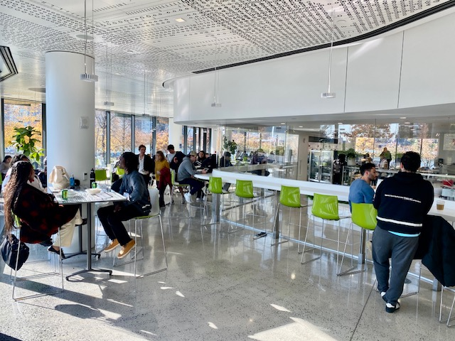

The Cornell Tech Café
The Cornell Tech Café is a great spot on Roosevelt Island for breakfast, lunch, Daily Hot Lunch Meals, Specialty & Grab and Go Sandwiches, Make Your Own Salads, Flatbread and Neapolitan Pizza, Salads, Soup, Coffee, Smoothies, Thursday Sushi, beer, wine and more.
Bring your laptop if you wish. The Cafe has very good wi-fi connection and great outdoor patio seating areas to eat, relax and people watch.
And more...
Bring your laptop if you wish. The Café has very good wi-fi connection.
And great outdoor patio seating areas.